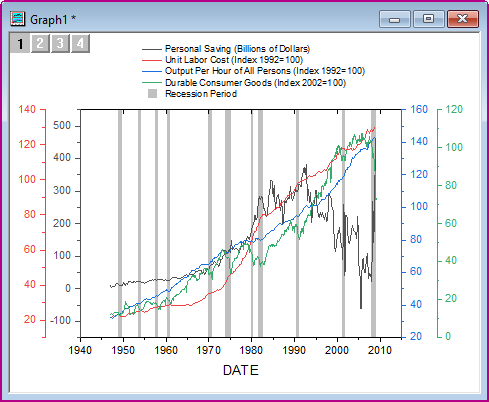
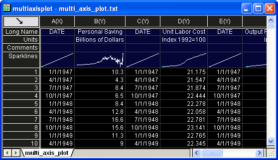
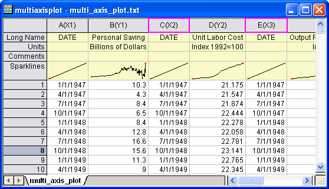
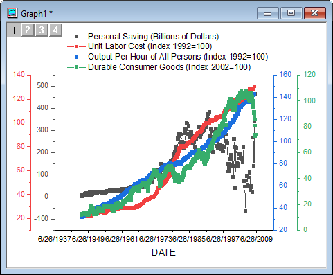
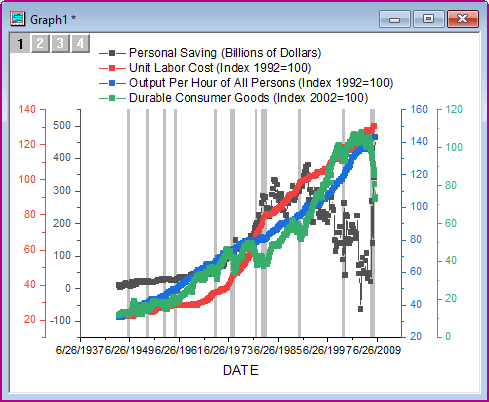
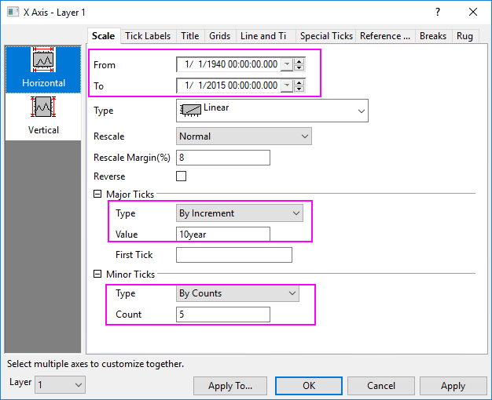
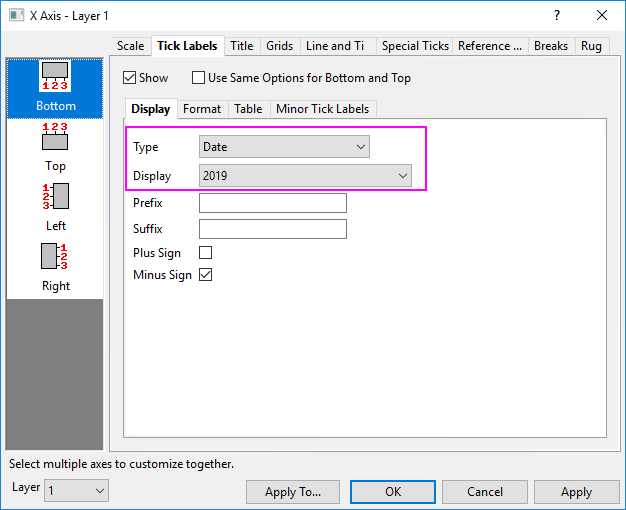
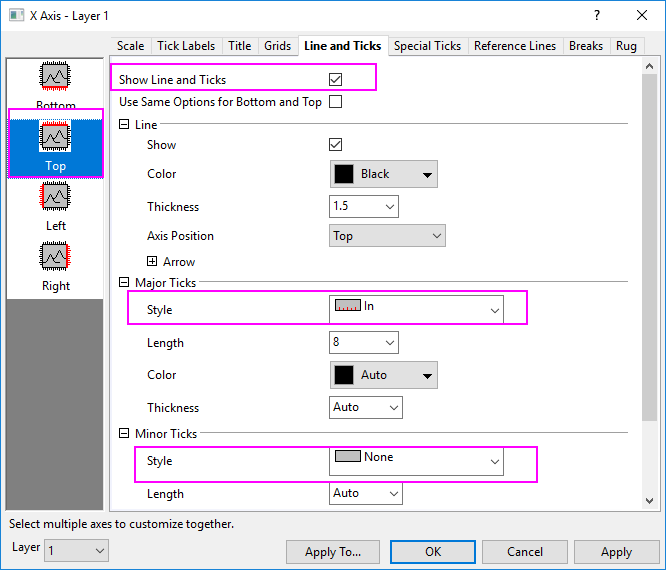

Diagramm mit mehreren Achsen
MultiAxes-Plot
Zusammenfassung
Dieses Tutorial zeigt Ihnen, wie Sie ein Diagramm mit vier Y-Achsen erstellen und Balken für die Rezession hinzufügen.
- 
Origin-Version mind. erforderlich: Origin 2015 SR0
Schritte
- Erstellen Sie eine neue Arbeitsmappe und wählen Sie Hilfe: Ordner öffnen: Sample-Ordner ... im Menü, um den Ordner "Samples" zu öffnen. Öffnen Sie in diesem Ordner den Unterordner Graphing. Dort befindet sich die Datei multi_axis_plot.txt. Ziehen Sie diese Datei per Drag&Drop in das leere Arbeitsblatt, um sie zu importieren.
- Platzieren Sie den Mauszeiger nah der oberen linken Ecke des Arbeitsblatts. Sobald sich der Mauszeiger in einen nach rechts unten weisenden Pfeil verwandelt, klicken Sie auf die mit der linken Maustaste, um das gesamte Arbeitsblatt zu markieren.
- 
- Klicken Sie mit der rechten Maustaste und wählen Sie Setzen als: XY XY im Kontextmenü, um die entsprechenden Zeichnungszuordnungen für die Arbeitsblattspalten festzulegen.
- 
- Markieren Sie die Spalten A bis H. Wählen Sie im Hauptmenü Zeichnen > Mehrere Felder/Achsen: 4Y, YY-YY, um ein Diagramm zu erstellen, wie unten gezeigt:
- 
- Klicken Sie doppelt auf die X-Achse, um den Dialog X-Achse - Layer 1 zu öffnen. Klicken Sie auf die Registerkarte Referenzlinien und dann auf die Navigierschaltfläche rechts vom Feld Referenzlinien bei Wert. Der Dialog wird minimiert, so dass Sie die Spalte col(I) des Arbeitsblatts auswählen können. Klicken Sie auf Fertig, um zur Registerkarte Referenzlinien zurückzukehren.
- Aktivieren Sie das Kontrollkästchen Abwechselnd füllen und dann das Kontrollkästchen im Header der Spalte Linie zweimal, um alle Kontrollkästchen aus der Spalte zu löschen. Klicken Sie auf OK, um den Dialog zu schließen, und fügen Sie eine Reihe von schattierten Bereichen zum Diagramm hinzu, die Rezessionsperioden darstellen.
- 
- Klicken Sie doppelt auf die untere X-Achse, um den Dialog Achsen für Layer 1 zu öffnen. Ändern Sie auf der Registerkarte Skalierung die Dialogoptionen, wie unten gezeigt, und klicken Sie dann auf Übernehmen.
- 
- Ändern Sie auf der Registerkarte Beschriftung der Hilfsstriche die Dialogoptionen, wie unten gezeigt, und klicken Sie dann auf Übernehmen.
- 
- Gehen Sie zur Registerkarte Linie und Hilfsstriche, klicken Sie auf das Symbol Oben im linken Bedienfeld und aktivieren Sie Linie und Hilfsstriche zeigen. Wählen Sie Innen für Stil unter Große Hilfsstriche und Kein für Stil unter Kleine Hilfsstriche. Klicken Sie auf OK, um die Einstellungen anzuwenden und den Dialog zu schließen.
- 
- Klicken Sie mit der rechten Maustaste auf das Legendenobjekt und wählen Sie Eigenschaften. Klicken Sie auf die Schaltfläche Legendensymbol hinzufügen auf der rechten Seite und wählen Sie ein gefülltes Quadrat für die Form und unter Symbolfarbe die Farbe Hellgrau. Unter Größe wählen Sie 30. Klicken Sie auf Hinzufügen und Wählen. Es wird ein neues Symbol zur Vorschau der Legende hinzugefügt.
- Klicken Sie in die Codezeile, die gerade zum oberen Feld hinzugefügt wurde, scrollen Sie zum Ende und geben Sie Recession Period ein. Klicken Sie auf OK, um den Dialog zu schließen.
- Verändern Sie Größe und Position der Legende nach Bedarf, klicken Sie mit der rechten Maustaste auf jede Kurve und wählen Sie im Kontextmenü Diagramm ändern in: Liniendiagramm, um die Punkt-Linienkurven in Linienkurven zu verwandeln. Das Diagramm sollte am Ende folgendermaßen aussehen.